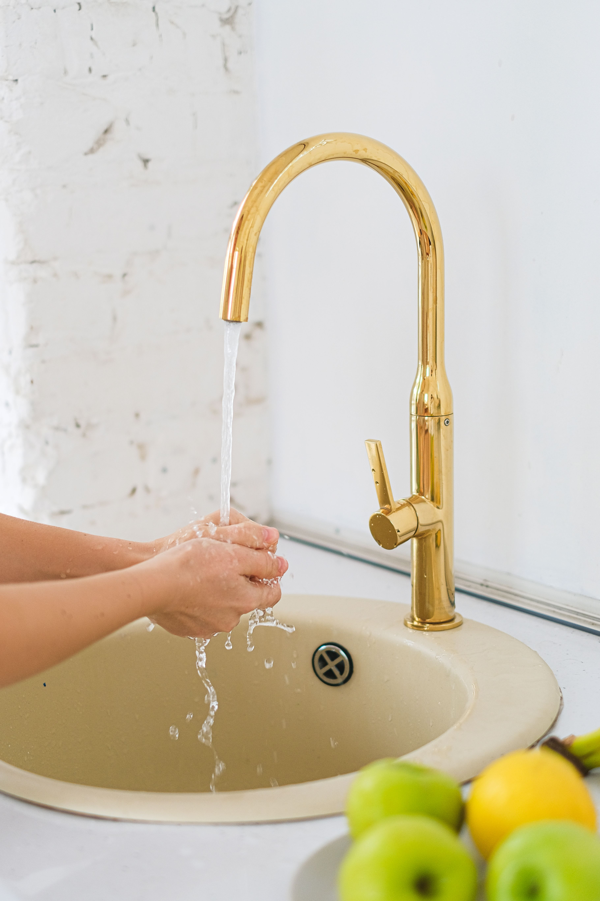

¿De dónde viene el agua?
El agua que usamos no aparece directamente en la llave. Primero se obtiene de fuentes naturales, como ríos, presas, manantiales o pozos. El lugar de donde se obtiene depende de cada ciudad o comunidad.
El agua de la naturaleza puede traer tierra, hojas, arena y microorganismos. Por eso necesita limpiarse antes de que sea apta para beber o para realizar actividades diarias.